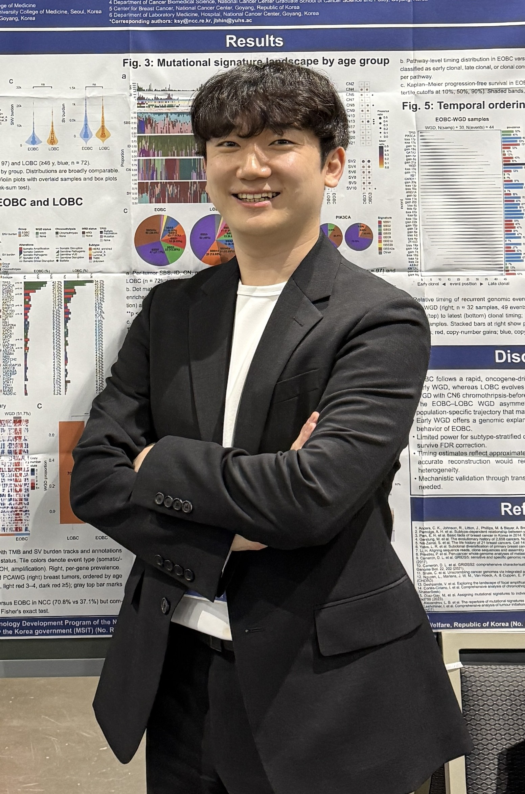

PhD Student · Bioinformatics & Cancer Genomics
Studying cancer evolution through patient genomic data.
Sejung (이세중) Lee, researcher at Yonsei University.
Cancer evolution · tumor genomics · structural variation.

Profile
Position, research focus, and methods at a glance.
Cancer evolution
Driver mutations, structural variation, and clonal architecture from patient-derived genomes.
02Honors & funding
Presidential Science Fellowship, NRF research fellowship, and a KOGO poster award.
03Omics analysis
WGS, long-read sequencing, transcriptomics, and immunological assay experience.
Publications
Peer-reviewed articles.
-
2026
Translating whole-genome doubling into precision medicine in cancer
Molecular Oncology · 10.1002/1878-0261.70302
-
2023
Anti-inflammatory effects and macrophage activation induced by bioavailable cinnamon polyphenols in mice
Molecular Nutrition & Food Research, 67(20), 2200768 · 10.1002/mnfr.202200768
Conference presentations
Poster presentations at domestic and international meetings.
-
2026
Temporal ordering of genomic events reveals distinct evolutionary trajectories in early-onset breast cancer
AACR Annual Meeting 2026 · San Diego, CA, USA · Poster #3531
-
2025
Elucidating genetic profiles and evolutionary trajectories of early-onset breast cancer
BIOINFO 2025 · Korea Genome Organization (KOGO) Annual Conference Poster Excellence Award
-
2024
Characterization of structural variants and germline mutations in early-onset breast cancer leveraging whole genome data
BIOINFO 2024 · Korea Genome Organization (KOGO) Annual Conference
Public profile